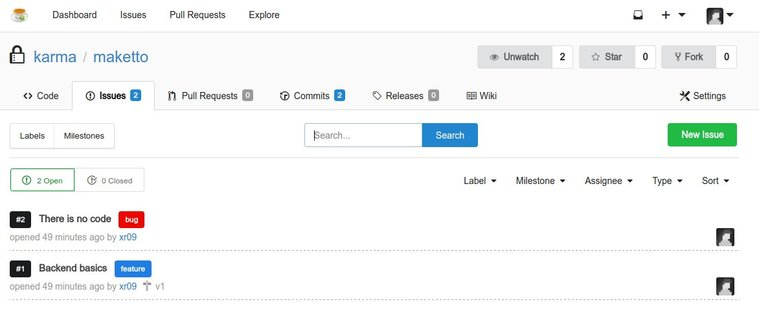

At work we've been running Gitlab CE for the last 3 years and everyone is thrilled, amazing features, great user experience, and it gets better with every new release. Totally recommend Gitlab for heavy enterprise self-hosted Git. (and their Omnibus Package is a breeze to get it up and running)
But recently they launched Gitea (a patch friendly Gogs fork), written in Go (really fast, low on resources), very nice UI. With Gitlab covering all your needs... what is Gitea good for?
Since Internet (or company network) is not always at my reach, I have one strong use case for a small personal Git service, with a beautiful commit history empowered with issues, labels, milestones, all the good stuff. This is 2017, tracking issues and features with TODO.txt is not fun anymore.
I'm now running Gitea on my laptop, it goes with me everywhere. No connection at home? It's okay, carry on. On vacations far away without any connectivity? It's okay, keep coding. Shipwreck on a desert island? It's okay, just fix the bug and eat bananas.
I hope the devs keep it small and light, there's no competition in this niche and they're doing an amazing job.
Issues View

There are several tutorials about installing Gitea, mix these with a local alias on /etc/hosts and you're good to go. I'm using git.local as my personal URL, so my git remotes look like https://git.local:3000/xr09/project.git.
This is my app.ini, you can use to tweak your own Gitea.
app.ini
APP_NAME = Local Git
RUN_USER = your.user
RUN_MODE = prod
[database]
DB_TYPE = sqlite3
HOST =
NAME =
USER =
PASSWD =
SSL_MODE = disable
PATH = data/gitea.db
[repository]
ROOT = data/repos
[server]
PROTOCOL = https
DOMAIN = git.local
ROOT_URL = https://git.local:3000/
HTTP_ADDR = 127.0.0.1
HTTP_PORT = 3000
DISABLE_SSH = true
OFFLINE_MODE = true
LANDING_PAGE = explore
ENABLE_GZIP = true
CERT_FILE = cert.pem
KEY_FILE = key.pem
[mailer]
ENABLED = false
[cache]
ADAPTER = memory
INTERVAL = 300
[service]
REGISTER_EMAIL_CONFIRM = false
ENABLE_NOTIFY_MAIL = false
DISABLE_REGISTRATION = false
ENABLE_CAPTCHA = false
REQUIRE_SIGNIN_VIEW = false
[picture]
DISABLE_GRAVATAR = true
ENABLE_FEDERATED_AVATAR = false
[attachment]
ENABLED = true
ALLOWED_TYPES = image/jpeg|image/png
MAX_SIZE = 4
MAX_FILES = 3
[session]
PROVIDER = file
COOKIE_SECURE = yes
comments